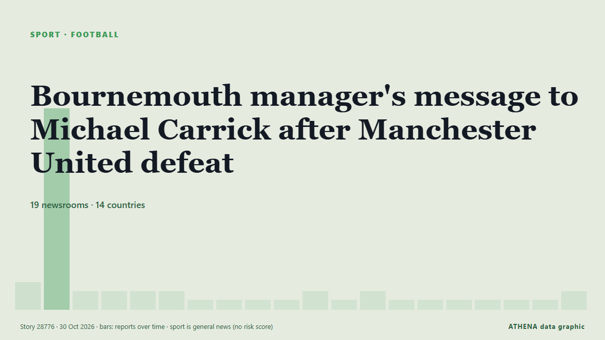

SportTitle card. 19 newsrooms in 14 countries Coverage: reports every 6 h
Bournemouth manager's message to Michael Carrick after Manchester United defeat

Bournemouth manager Marco Rose felt sympathy for Michael Carrick as he moved closer to the brink at Man Utd. from Manchester Evening News
In brief
Reported independently by 19 outlets in 14 countries since 25 Oct, first by Punch; coverage is fading. Sport and culture stories are filed, not risk-assessed. Confidence is 90% (high), with 19 independent outlets corroborating it and an average source reliability of 71%.
What changed: 1 new report in the 24 hours to 30 Oct.
First reported as: Why Michael Carrick dropped Bruno Fernandes for Manchester United vs Bournemouth
At a glance
5.2Importance
—Not risk-assessed
90%Confidence
Selected, scored and written by ATHENA's published methodology. No editor intervenes in individual events. How this is produced ›
| 25 Oct 06:59 UTC | 2 |
|---|---|
| 25 Oct 12:59 UTC | 22 |
| 25 Oct 18:59 UTC | 1 |
| 26 Oct 00:59 UTC | 1 |
| 26 Oct 06:59 UTC | 1 |
| 26 Oct 12:59 UTC | 1 |
| 26 Oct 18:59 UTC | 0 |
| 27 Oct 00:59 UTC | 0 |
| 27 Oct 06:59 UTC | 0 |
| 27 Oct 12:59 UTC | 0 |
| 27 Oct 18:59 UTC | 1 |
| 28 Oct 00:59 UTC | 0 |
| 28 Oct 06:59 UTC | 1 |
| 28 Oct 12:59 UTC | 0 |
| 28 Oct 18:59 UTC | 0 |
| 29 Oct 00:59 UTC | 0 |
| 29 Oct 06:59 UTC | 0 |
| 29 Oct 12:59 UTC | 0 |
| 29 Oct 18:59 UTC | 0 |
| 30 Oct 00:59 UTC | 1 |
Why these numbers
Importance
Reach
14 countries
Breadth
19 outlets
Novelty vs the archive
82 % new
Diversity
4 ownership types
Speed
0.2 per hour
Risk
—
Confidence
Independent corroboration
19 independent outlet(s), 31 original report(s) (0 wire copies excluded)
Reliability of the reporting sources
mean 71 % over 19 rated outlet(s)
Independent countries
14 countries
Stability of the reporting
10 % silently edited · 0 % estimated dates · 0 disputed claim(s)
Agreement of the classification
88 %
The reporting — who reported it, and when
headline as published · opens the original- Punch · NigeriaEPL: Carrick reveals regular Ferguson, Solskjaer talks
- CNA (Channel NewsAsia) · SingaporeCarrick drops United captain Fernandes to bench against Bournemouth
- Punch · NigeriaEPL: Carrick to bench Brruno for Bournemouth clash — Report
- Channels TV · NigeriaCarrick Drops Fernandes After Como Outburst
- Indian Express · IndiaWhy Michael Carrick dropped Bruno Fernandes for Manchester United vs Bournemouth
- Channels TV · Nigeria[UPDATED] Bournemouth Batter Man Utd, Leave Carrick On The Brink
- The Irish News (Belfast) · United KingdomMan Utd manager Michael Carrick’s position hangs in balance after heavy defeat to Bournemouth
- Nile Post · UgandaBournemouth Punish United After Fernandes is Dropped
- MyJoyOnline · GhanaBournemouth beat Man Utd to increase pressure on Carrick
- Vanguard · NigeriaMan United’s misery continues, suffer 3-0 defeat to Bournemouth
- Daily Trust · NigeriaManchester United suffer home loss, Liverpool claim maiden Anfield win
- APA (English) · AzerbaijanManchester United extended their winless run to eight matches with heavy defeat to Bournemouth
- Jamaica Observer · JamaicaMan Utd battered by Bournemouth to leave Carrick on the brink
- Vanguard · NigeriaCarrick unsure over Man Utd future after Bournemouth loss
- The Irish News (Belfast) · United KingdomMichael Carrick unsure what future holds after Man Utd humiliated by Bournemouth
- Punch · NigeriaEPL: Bournemouth thrash Man United 3-0, pressure mounts on Carrick
- The National · United Arab EmiratesMan United v Bournemouth ratings: Disaster at Old Trafford as Tielemans and Dalot struggle
- Asharq Al-Awsat (English) · Saudi ArabiaCarrick Unsure Over Man Utd Future After Bournemouth Loss
- Punch · NigeriaManchester United suffer eighth winless match against Bournemouth
- The Namibian · NamibiaCarrick on the brink as Man Utd misery mounts, Isak stars for Liverpool
- Stuff · New ZealandManchester United’s latest humbling leaves coach’s job under threat
- CNA (Channel NewsAsia) · SingaporeUnited leave Carrick hanging by a thread after Bournemouth loss
- Evening Standard (London) · United KingdomManchester United 'make Michael Carrick sack decision' after Bournemouth loss
- The Irish News (Belfast) · United KingdomMichael Carrick avoids talk over Manchester United future after Bournemouth loss
- Manchester Evening News · United KingdomBournemouth manager's message to Michael Carrick after Manchester United defeat
- The Irish News (Belfast) · United KingdomMichael Carrick arrives at Man Utd training ground after talks about his future
- SABC News · South AfricaUnited leave Carrick hanging by a thread after Bournemouth loss
- The Herald · ZimbabweTACTICS EXPOSED
- Punch · NigeriaEPL: Carrick, Fernandes resolve tensions after Bournemouth defeat
- The National · United Arab EmiratesPremier League predictions: Man United misery goes on, Liverpool and Arsenal all square